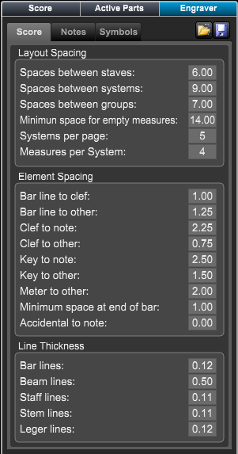

Engraver Panel - Score Section
Engraver Panel - Score Section
If the Layout panel is not showing click on the Layout button at top right of Control Bar or type "Shift-L" to open the panel.
Then choose the Engraver panel.
The Engraver Layout Panel has two sections containing all the symbols that will be entered into your score.
 |
Tabs - allows you to choose to edit layout settings ot note spacing.
Layout Spacing - allows you to set the distance between score layout elements. Element Spacing - allows you to set the distance between score elements. Line thickness - allows you to set the thickness of various line. |